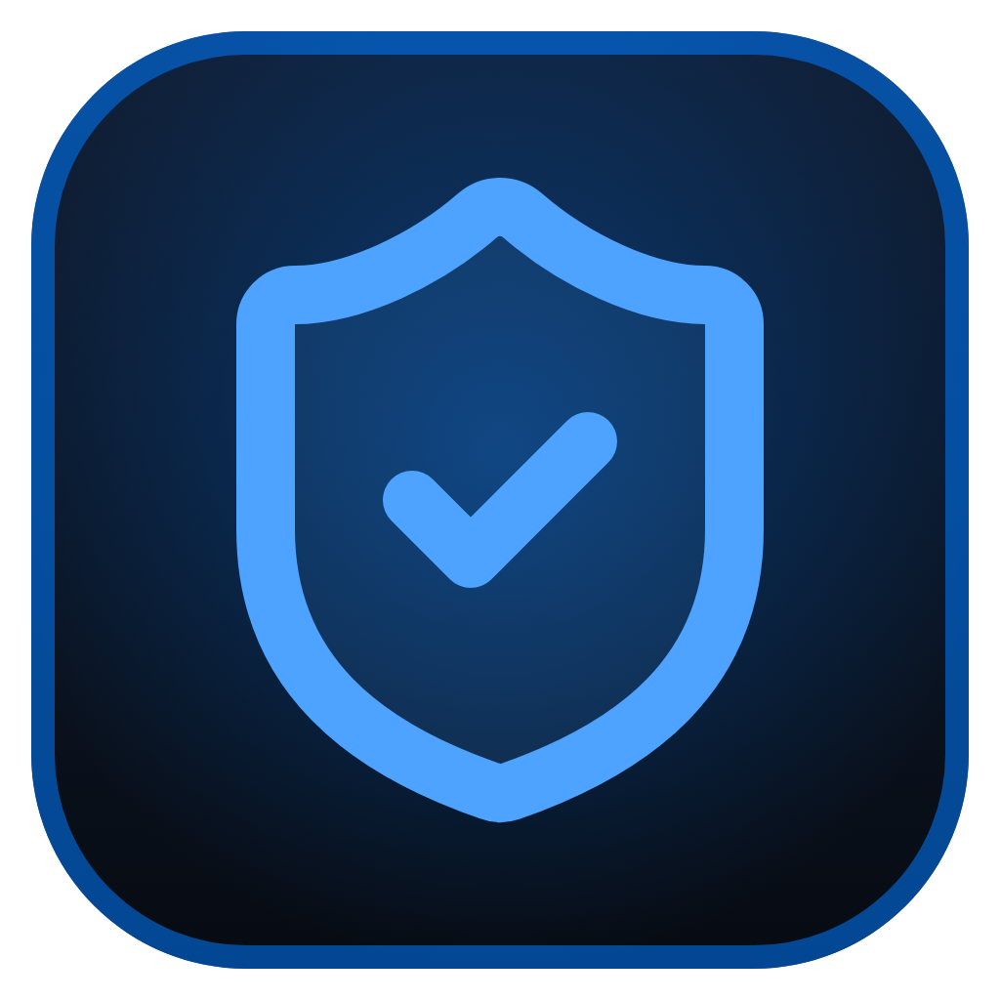

BASTION
SSH Central
Endereço do servidor Bastion (Linux)
É o mesmo endereço que você abre no navegador. Fica salvo; dá para trocar depois em
Bastion → Alterar servidor
.
Aceitar certificado HTTPS inválido/autoassinado deste servidor (use só se acessar por IP com https)
Salvar e conectar